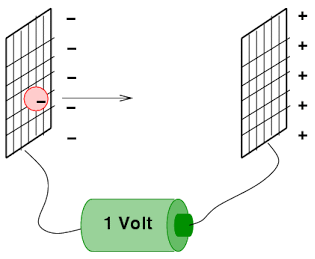

Aula12-96: Momento e energia relativísticos
Momento linear relativístico
Em mecânica clássica, o momento linear de um corpo é uma grandeza física cuja definição foi estabelecida visando à sua conservação na ausência de força resultante sobre o corpo em questão. Isto é, os físicos constataram que essa quantidade permanecia constante em quaisquer referenciais na ausência de força resultante agindo sobre um determinado corpo e, a essa quantidade, deram o nome de momento linear.
No entanto, em relatividade, a quantidade clássica (dada pelo produto massa × velocidade) não se conserva. Nesse contexto, a quantidade que se conserva e que desempenha papel semelhante ao momento linear clássico é o momento linear relativístico.
Energia relativística
Analogamente ao que ocorre com o momento linear, acontece com a energia. A energia também é uma grandeza física cuja definição foi estabelecida visando à sua conservação em quaisquer referenciais, em sistemas conservativos. A energia clássica também não se conserva no contexto da relatividade.
A expressão que nos dá a quantidade que se conserva nesses sistemas, em relatividade, é a seguinte:
Em que a energia de repouso é:
E a energia cinética vale:
Outras quantidades que se apresentam invariantes de um referencial para outro são:
◦ Relação pitagórica da energia relativística
◦ Relação triangular da energia relativística
O elétron-volt
|
Trata-se de uma unidade de medida muito conveniente para lidar com quantidades pequenas de energia. Um elétron-volt corresponde ao trabalho necessário para fazer um elétron atravessar uma diferença de potencial de um volt. |
 |
Teorema trabalho-energia para relatividade
Em física clássica, aprendemos que a variação de energia cinética de um corpo é igual ao trabalho realizado sobre ele e que, em casos em que há energia potencial, a variação dessa energia é igual a menos o trabalho realizado sobre ele. O teorema que descrevia a relação entre a variação de energia cinética e o trabalho era chamado teorema trabalho-energia.
Agora, em relatividade, temos algo semelhante. O teorema trabalho-energia para relatividade sustenta que o trabalho realizado sobre um corpo é igual à variação de sua energia relativística:
Partículas sem massa
É experimentalmente comprovada a existência de pelo menos uma partícula sem massa na natureza: o fóton. Especula-se que haja mais: o gráviton, por exemplo. Em termos de física clássica, é impossível explicar o comportamento dessas partículas, mas a relatividade nos dá pistas sobre isso.
Da relação pitagórica, levando em consideração a nulidade da massa, obtemos que:
Observando a relação triangular, constatamos que:
Ou seja, disso decorre que partículas sem massa viajam à velocidade da luz.
Com esse valor de velocidade, o dessa partícula vai ao infinito. Isso gera uma indeterminação no cálculo da energia dessa partícula, porquanto
vale infinito e a massa vale 0.
Dessa breve análise, concluímos que partículas sem massa:
➔ Têm velocidade igual à velocidade da luz c;
➔ Têm energia diferente de zero.